10/22 Day 2 樂都
外頭有隻貓在叫，徹夜直到清晨。
房內則有一隻蚊子嗡嗡作響，而我遍尋不著招待所號稱有提供的除蚊器。
五點半起床，但更早之前就已經醒來。
天色一片黑暗，天亮的時間並沒有這麼早。
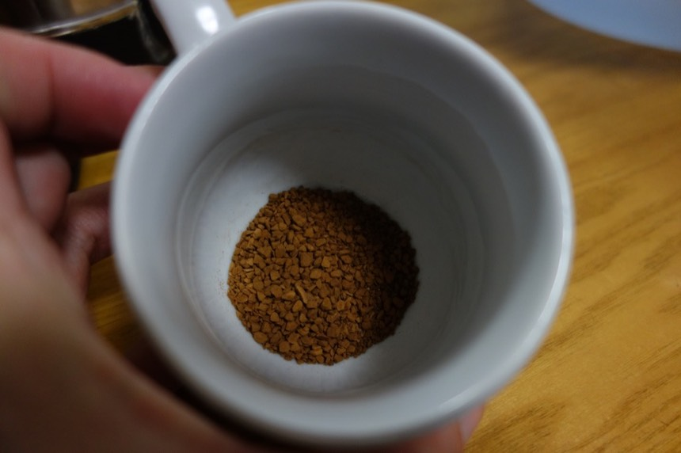
用房間內附的杯子，燒熱水泡熱呼呼的咖啡配餅乾當早餐，一邊慢條斯理地收拾裝備。
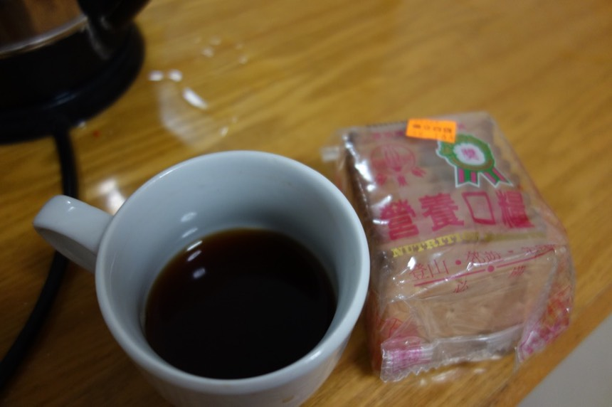
睡前因為想說隔天可以早點出發，所以會先將用不到的東西收起來。
但其實你永遠猜不到什麼是用不到的，比如拖鞋，在還沒有正式換上慢跑鞋之前，都不用急著收拖鞋。
因為水壺一共有四個，所以除了一般的開水之外，還調了一些有味道的，加上寶礦力粉就變成運動飲料。
加上黑糖薑塊，就變成黑糖茶，在路上喝的時候味道都很不錯的。（順便消耗家裡找不到機會吃的食材）
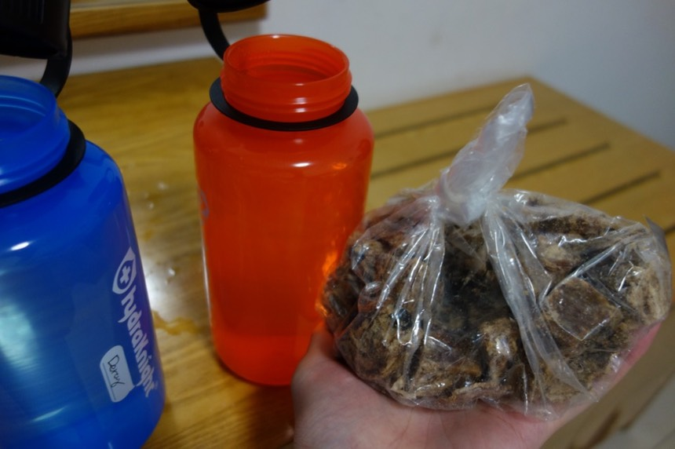
天亮後立刻出門，七點十五開始騎車，一出地震局發現馬路濕濕的。
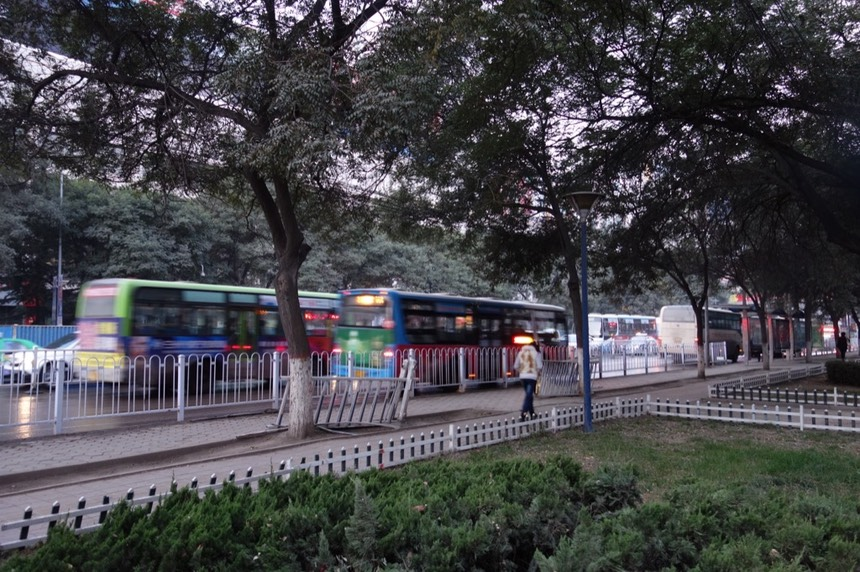
但明明沒有下雨，為什麼路上這麼濕呢？後來才看到是撒水車搞的鬼。
故意把馬路弄濕 想必是為了怕塵土飛揚變成空氣污染，但泥巴路實在難騎。
本來想趁早騎車避開車潮，完全是傻瓜的想法，我出發的時間，正好是蘭州早上所有人都在通勤的時間。
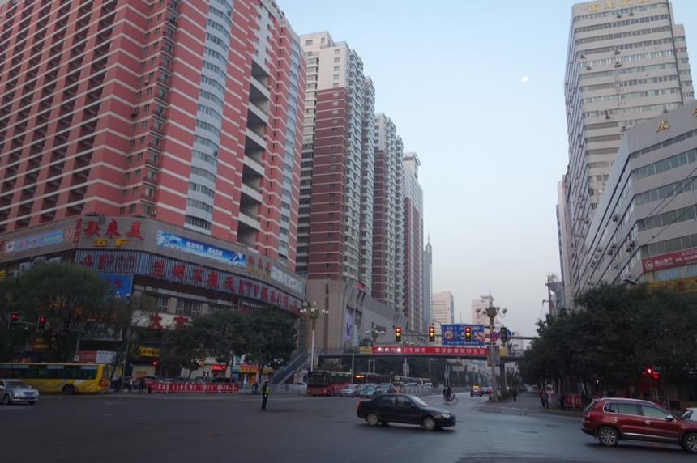
而蘭州也太大了，跟2007年相比已經截然不同，城市一直在擴張。
騎了一段路就發現腳踝的感覺怪怪的，低頭一看，襪子太短，褲子太短再加上打了綁腿，露出了一節腳踝。
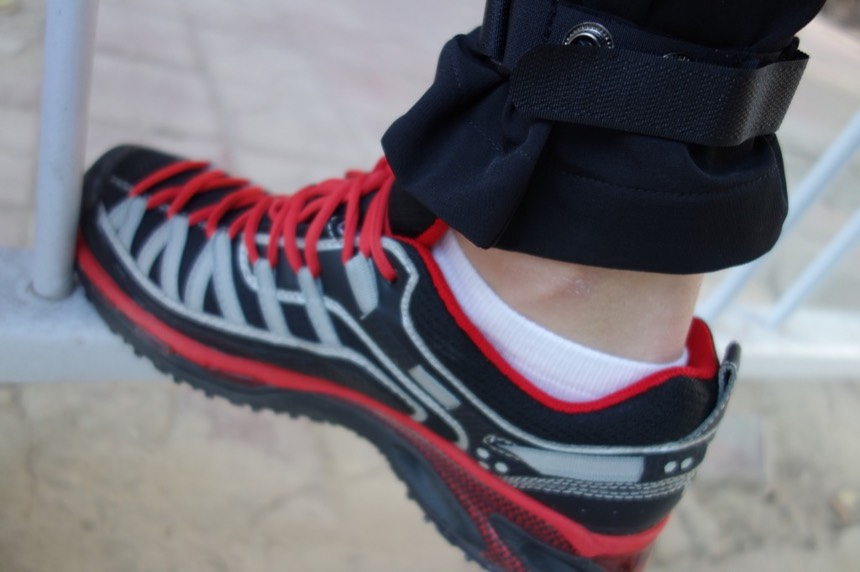
一開始不以為意，但這截露出來的部分，等之後上了高原溫度驟降，就成了凍傷最嚴重的部分。即使已經做了防護措施依然。
本來想早早出發，避開上班的車潮。
但這城市大到我花了足足兩個小時才騎出去（或是我以為騎出去了）
一路上看到很多早餐小推車，看起來超美味，完全不用煩惱去哪邊買早餐吃的問題，而且吃的東西很豐盛，什麼都有在賣。
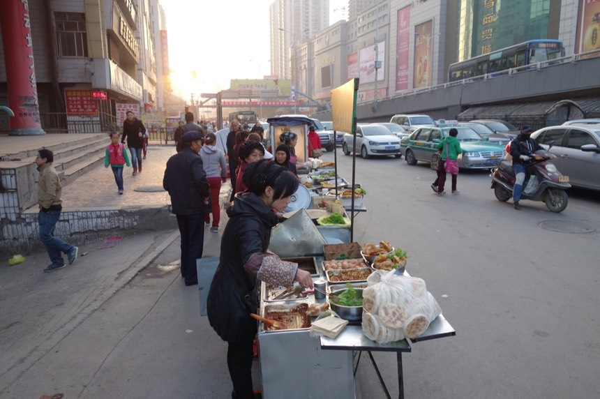
實在忍不住也買了一個里肌夾餅（4元）當早餐吃
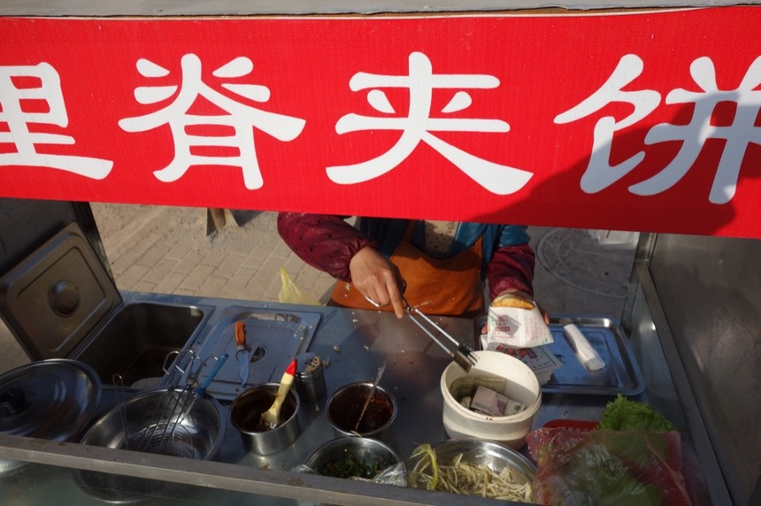
外帶長這樣～小小的感覺很可愛。
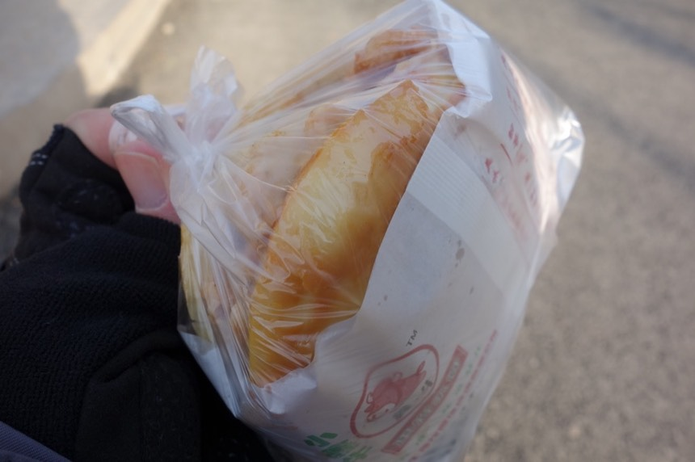
超美味呀！肉都放在外面，看起來好像很豐富，其實裡面都是菜。
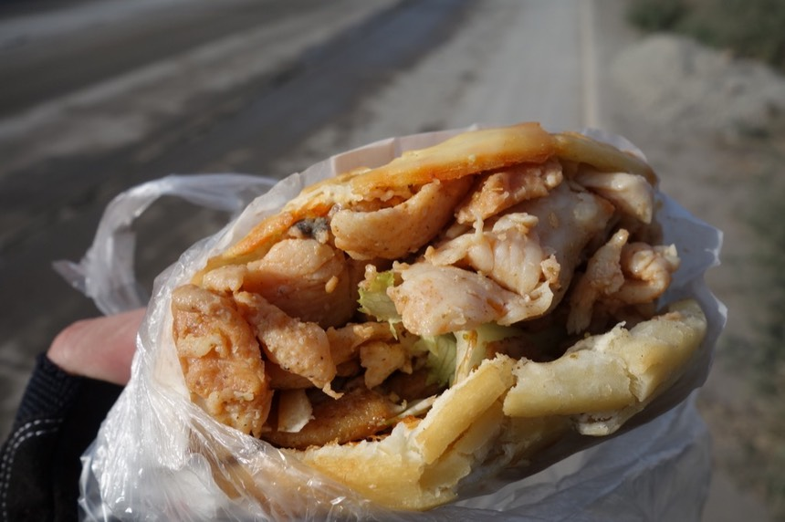
離開市區後依照昨天復習過的地圖，路線在腦海內呈現。
其實只要一直保持騎在109國道上，這趟旅行就已經成功了一大半。
目前所在地是甘肅，往拉薩的話，要先經過青海，騎行整個青海（占整個旅程約7成），進入西藏後，只有剩下約四天的路程。
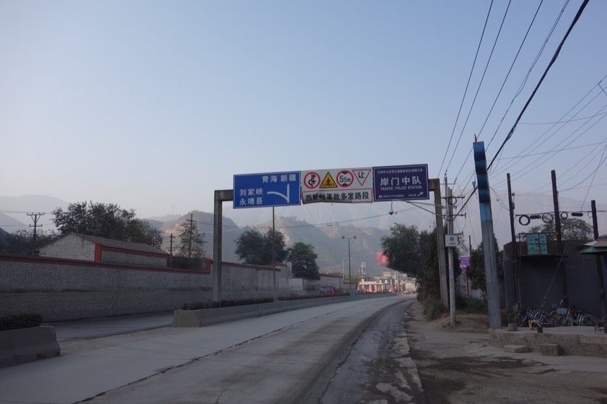
新疆上次去過了，這次就改去青海吧！
一大早很冷，沒戴帽子耳朵很凍。
越接近中午，溫度就開始飆升。
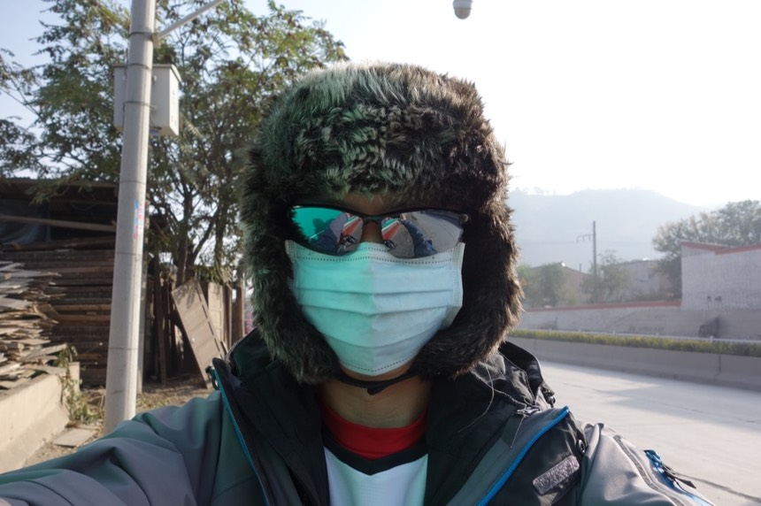
到下午時，溫度計顯示30，很熱。
但不至於熱到30度這個程度，大概是因為手錶戴在身上又包在外套內的關係，之後將手錶掛車上，溫度顯示就正常多了。
這對全身穿保暖禦寒裝備的我簡直是酷刑，幸好拉開外套拉鏈，吹進來的風就能夠散去身上的悶熱。
一早都在市區繞來繞去，想說這次沒看到黃河就要離開蘭州了。
結果一走出蘭州，就是沿著黃河畔騎了一段路。
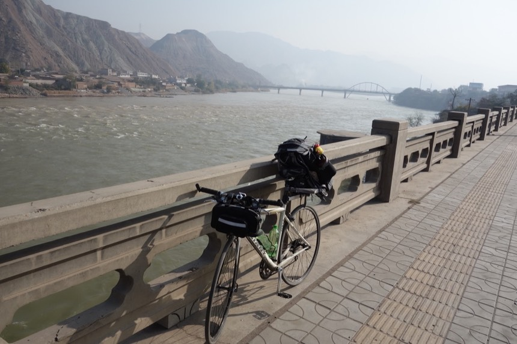
附帶一提
路上的狗變多了！有很多寵物狗。是個令人訝異的改變。
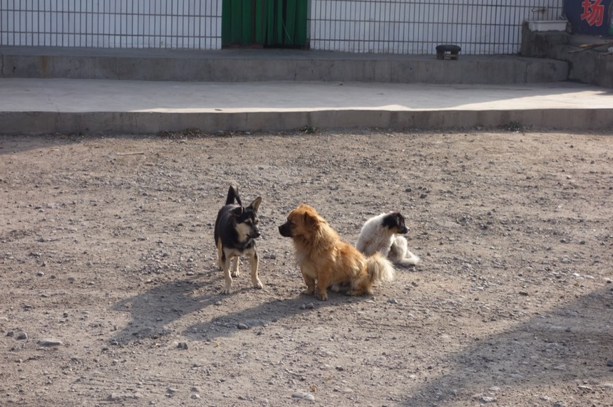
因為6年前來中國，真的待兩個月看到的狗一隻手就數完了，這次就完全不一樣。
若不是我眼殘的話，這個109國道的牌子，是開始騎車之後，所出現的第一塊。
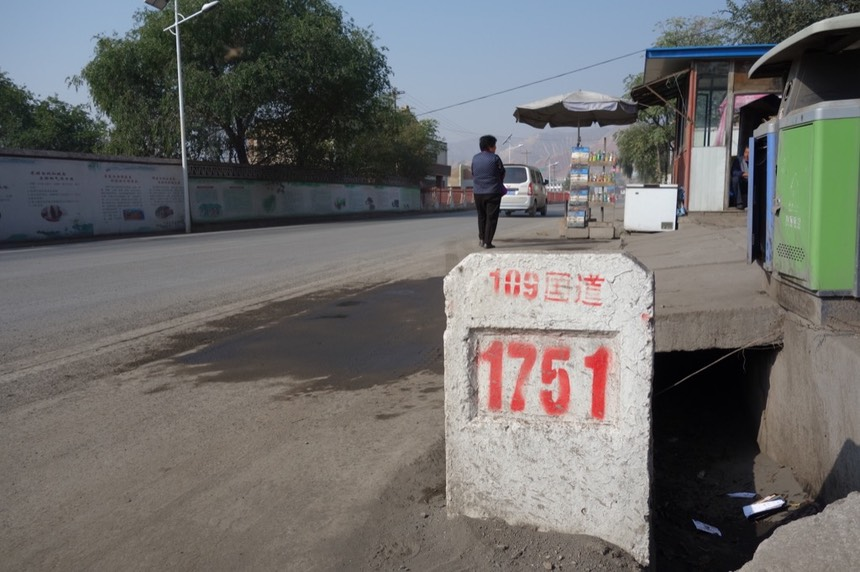
當上面的數字變成3880，就恭喜到達拉薩了，也就是還有2129公里，不算還好，一算感覺就是個遙不可及的距離。
從蘭州開始騎，單純是因為我個人想這麼做，蘭州作為往拉薩的起點，其實沒有任何意義。
大部份人會選擇從西寧開始騎，但西寧出發會經過幾百公里風景單調，鳥不拉屎的戈壁灘。
我個人會建議從格爾木，也就是青藏公路的起點開始騎，但正式上路之前，建議可以做點熱身活動再出發。
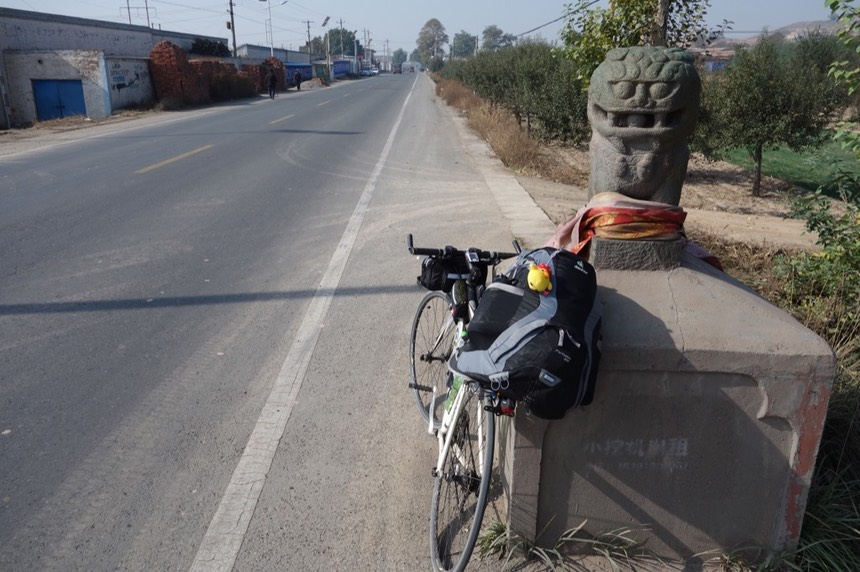
從蘭州開始騎的壞處我想想，蘭州到西寧，估計要兩天，這兩天路上的景色就是城市，鄉村，小房子，城市。
很難有個寧靜的路段，可以說幾乎不可能，路旁永遠有房子，工廠、路人、商店、卡車、汽車、各式車輛。
可以說是很熱鬧/吵雜的一段路，騎起來並不安詳（？），想要那種被世界遺忘的感覺，真的要到上了青藏公路之後才有。
而在這之前，你要付出約1000公里的騎行，只為了到達青藏公路的“起點”，作為暖身太多了一點。
甘肅也許有很多大城市，但是作為一個自然物資的生產地，甘肅的資源其實很貧乏，畢竟缺水太嚴重。
路上看到最多的大概就是玉米跟白菜。
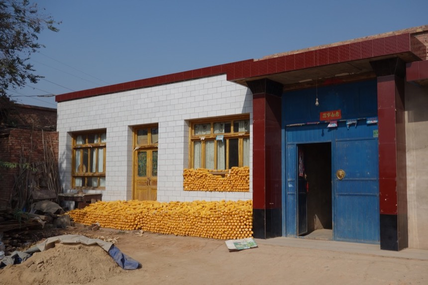
這種玉米不知道食用的方式為何？都會曬得乾乾的，然後呢？（底下留言有解答）
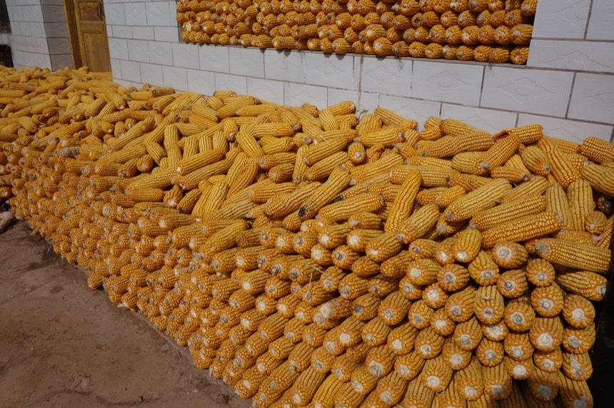
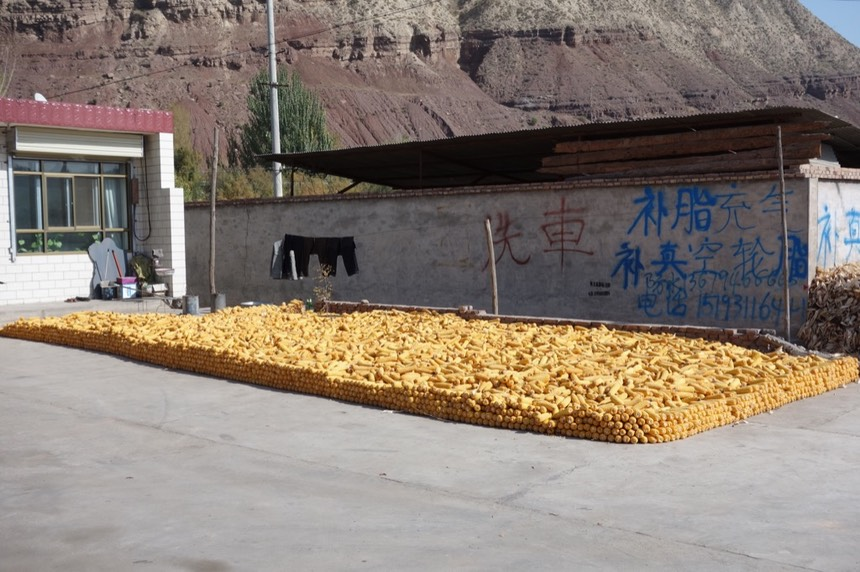
這個則是白菜，會有大卡車或是小貨車，就在路旁賣起白菜，生意還都不錯，小販把外層比較爛的菜葉剝掉。
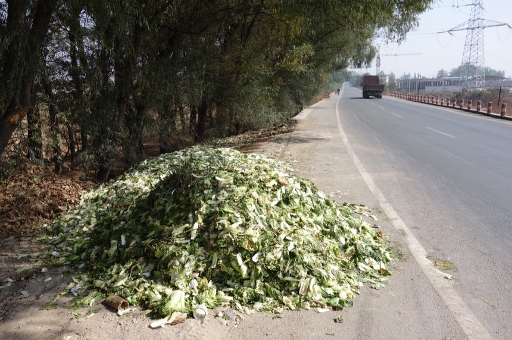
隨手丟地上，慢慢的就堆成一座白菜小山，初看到有點驚人，都不用打掃的嗎？
後來就看到養羊的牧民會帶著一群羊來吃白菜小山，所以其實問題不太大。
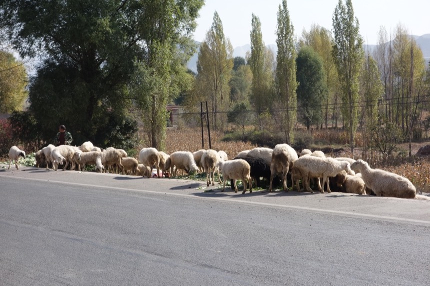
中午用餐時間，連看似不起眼的餐廳都坐滿客人，等待上菜。
不想在用餐時間跟大家一起久候，所以先離開找到的餐館，繼續騎車，到下午一點才吃飯。
一路上隨時都是商店、餐廳，真的完全不用擔心現在離開這間餐館，下一間說不定是50公里之後，完全多慮。
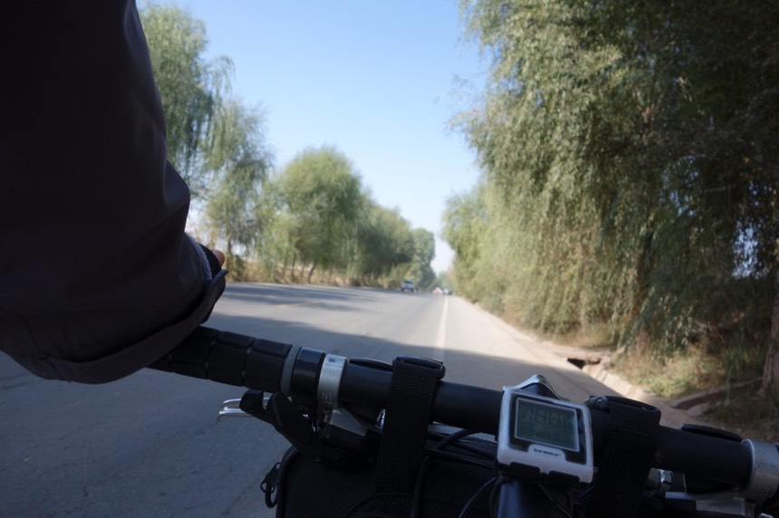
午餐在這間餐廳吃，小喵號會移到從室內可見的範圍內。
發現在中國騎車，路人對單車的好奇關注程度，以0~10分的話，就是0分。
也許因為這次輕裝上路，所以看起來沒有那麼厲害的樣子，也許因為中國對腳踏車的印象就是生活的一部份。
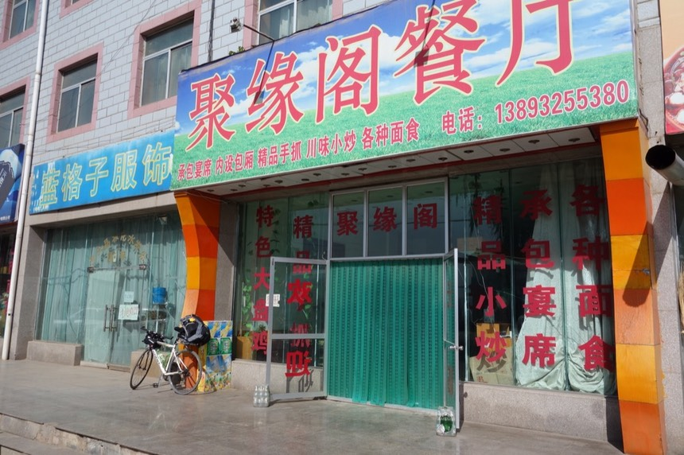
餐廳內，還是有人在等上菜，但人數和剛才相比少多了，剛才就很像城市佬走進荒野西部的一間酒吧，一進去所有人都轉頭打量你。
唯獨除了老闆和服務生之外，他們很忙，於是乎你想點餐也沒人理你，一眼望去也沒有空位，
然後大家都不是在吃飯，而是在等開飯，默默轉身離開是好選項。
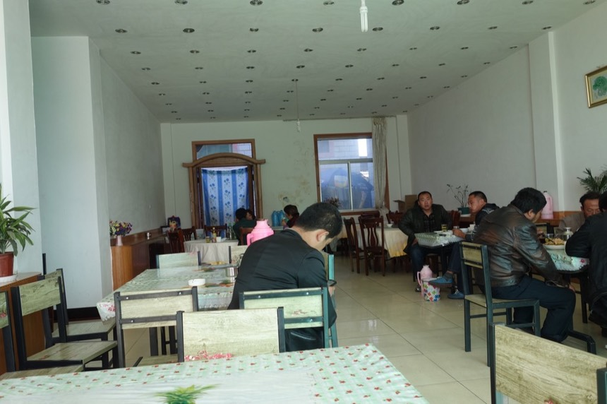
這是我口袋內的垃圾，早上吃到現在的餅乾、巧克力等包裝紙，還有廢棄的口罩，垃圾都會一直放在身上，直到找到垃圾桶為止。
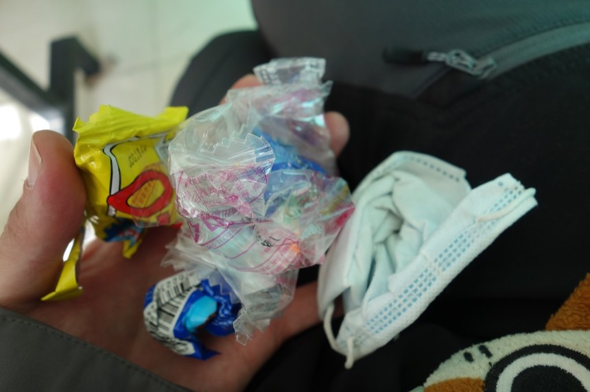
點了炒麵條，小碗7.5，大碗8，才差0.5元，正常人都會點大碗吧？
送上來真的超大碗也超美味！
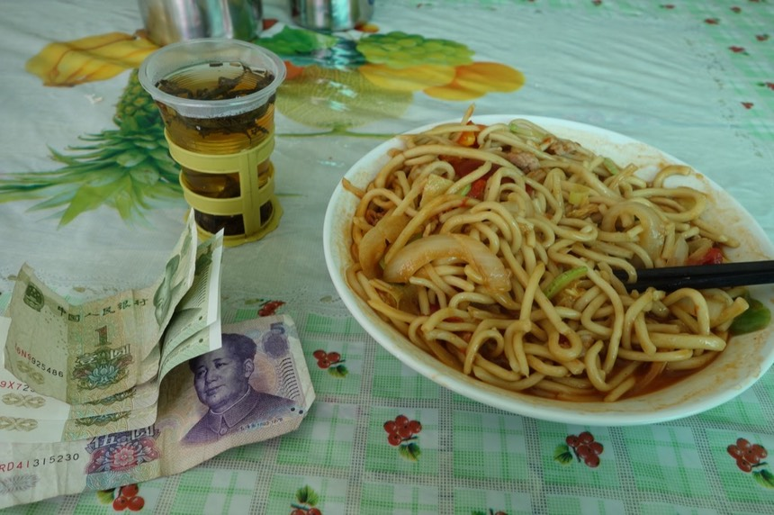
老闆在我面前也吃起了炒麵，還切了一盤滷肉看的我口水直流，有跟我閒聊兩句，但並沒有要分我吃的意思。
這一路上大卡車實在太多，空氣很糟（還有農用拖拉機和三輪車也是空氣污染的兇手）
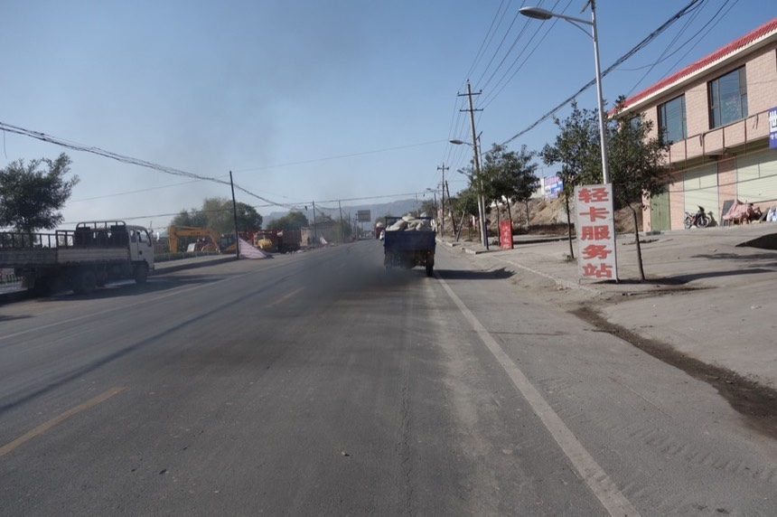
跟在他們的屁股吸廢氣很令人生氣，我都會停在路邊，等他們開遠之後，再接著騎，順便也可以休息一下。
15:20 就抵達今天的目的地 海石村（灣）
是個新興（？）的城市，而我不喜歡城市。
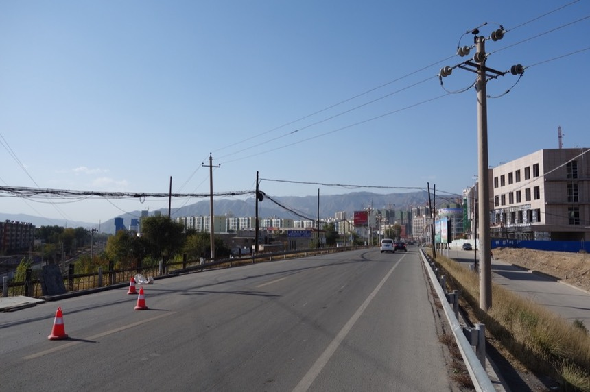
由於時間還早，加上從蘭州過來一路上都是餐廳和旅館，感覺這一路上吃和住都不是問題。
所以我決定把握時間多騎點，另一方面城市住宿也貴。住在郊區的話，怎麼樣也便宜很多。
悲劇一
離開海石村的時候誤上301省道
要命的爬了一堆陡坡
雖然感覺有點怪怪的，路好像變的小條了一些？路的風格（？）也不太一樣。
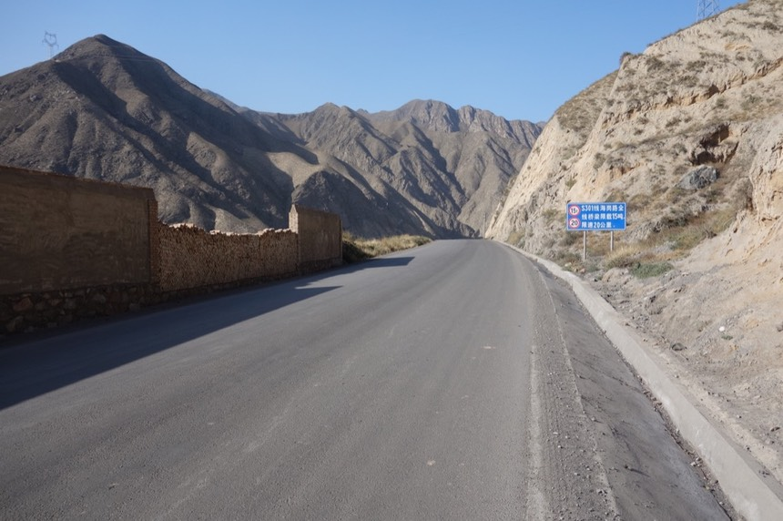
但我想只要在路邊看到109國道的牌子就會安心了
誰知道等著我的路牌，卻是301省道（往土魯番）
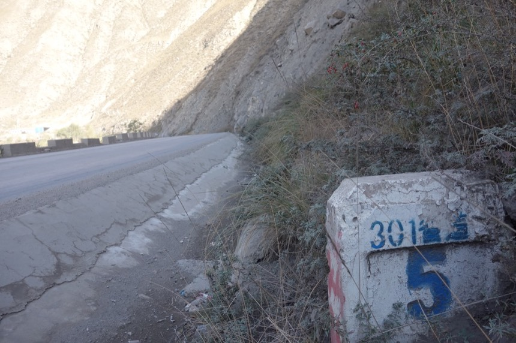
數字5表示我騎了5公里的山路，白騎了爬坡，加上回到市區的回程，總計浪費了一小時。
吐魯番我之前去過啦！！（翻桌～～）
悲劇二
離開海石村之後，並沒有沿路很熱鬧到處都有旅館和餐廳，接下來的路，就沒那麼有發展，事實是”荒涼“到不行。
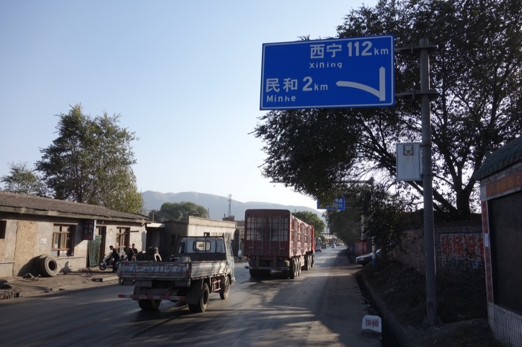
偶爾會有商店，有餐廳，就是沒旅館，下午六點還未見可過夜的處所。心裡有點緊張。
眼看就要天黑，我的知識和經驗都告訴我夜騎很危險，強調，很・危・險。
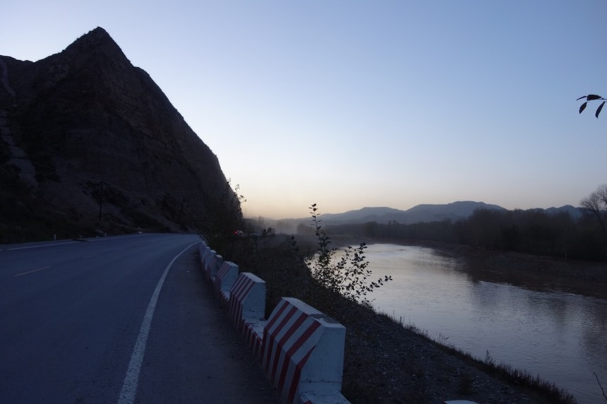
在黃昏時分厚著臉皮問了，水力局、商店、餐廳、加油站等地方。
但全部都拒絕收留我一晚，即使我願意付床費，這發展有點讓我訝異，我想說只是打個地鋪應該沒那麼困難吧？
事實上就是這麼困難，設想的和實際發展總是不一樣，但在不是住宿的地方投宿本身就有問題，也怪不得別人。
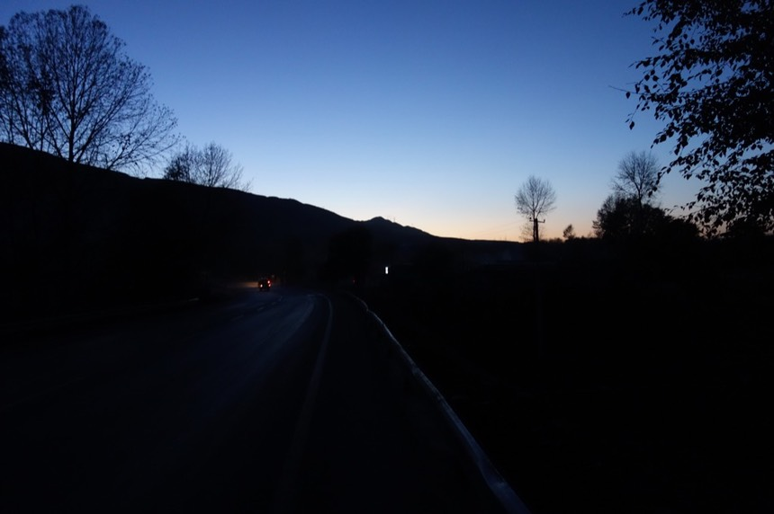
雖然碰了一堆釘子，但得到一個情報，在距離15∼18公里（不同的人不同的回答）遠的地方，有個叫樂都的地方有旅館。
但這就表示要在漆黑一片的路上摸黑夜騎至少1個小時，才會到達。
夜騎非常危險，但沒有別的辦法了，不然就睡在路邊，沒有露營設備這樣。
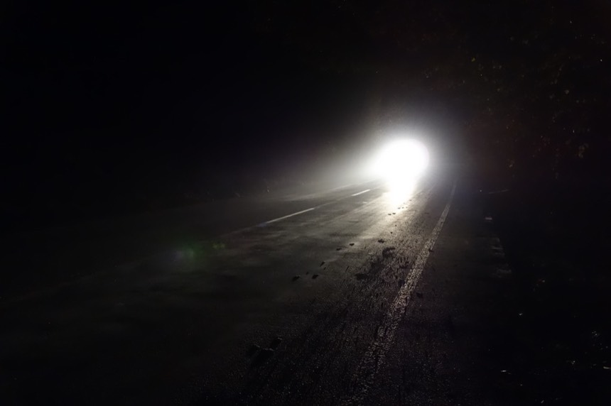
沒有路燈的山路，晚上就是這麼黑，我恨對向車道打遠光燈，完全閃到眼睛連看都看不見，但往來車輛的光源，是照亮路面的最好方式。
打開車屁股的紅色LED讓它閃爍（感覺安全的多），再拿出手電筒照明，一如往常亮度很差但聊勝於無。
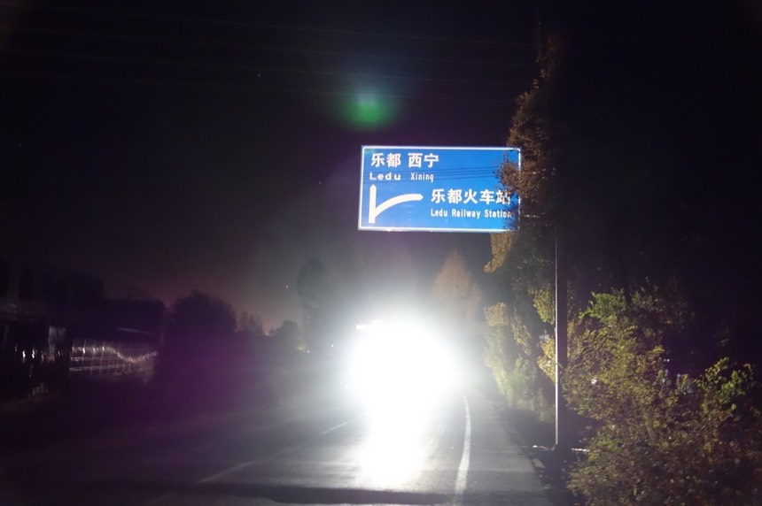
路上一直被對向車道的駕駛用遠光燈照的我整個人很瞎，就算被亮到後緊急按煞車，這樣的舉動還是很危險。
差點就要撞上凸起在路邊的人行道而摔車。
白天能清楚看見地上的石塊和雜物以便閃避，減少爆胎的機會，晚上只能咬著頭皮硬騎。
什麼也看不見，更別提閃避，幸好老天保佑小喵號平安無事，一路到樂都都沒有爆胎。
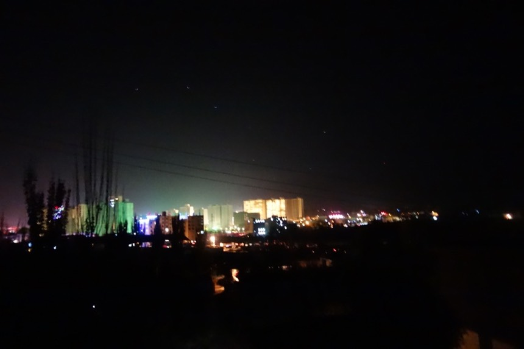
再過了很漫長的時間後，總算平安抵達樂都。
為了離開城市所以沒住海石灣，結果又掉入另一座城市。
今天是旅行的第一天，居然就陷入了夜騎的戲碼，一天就騎了超過150公里，而且還是我自找的...但真的怎麼也料不到呀。
旅行Tips：在沒有確定下一個住宿地點之前，不要貿然離開今天的住宿點，即使時間還早。
像這樣的小知識，我會記錄在筆記本內，真是花錢也買不到的經驗，得自己親身去換回這樣的認知。
找了三間旅館，前兩間都太貴（其實價位也還在100人民幣以內，但還是超過了預算）
找到第三間只要30元，立刻入住，房間在二樓，扛小喵好上樓還要當心後背包會往後翻落。
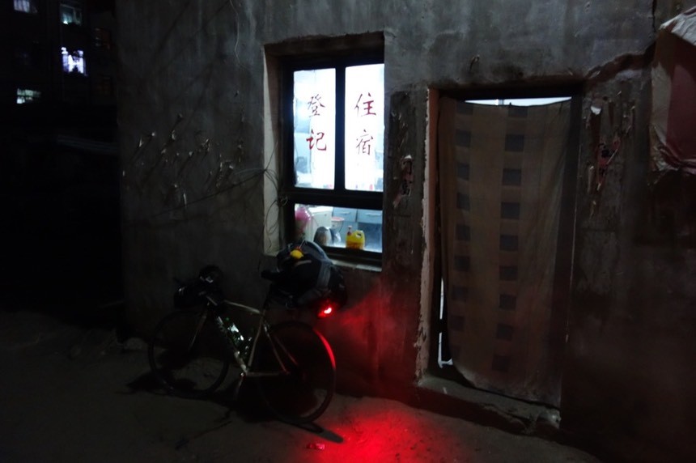
旅行Tips：要搬運單車時，可以先拿出背包內重的東西（電器包，藥包，盥洗包，單車用品包那些），分兩批搬運。
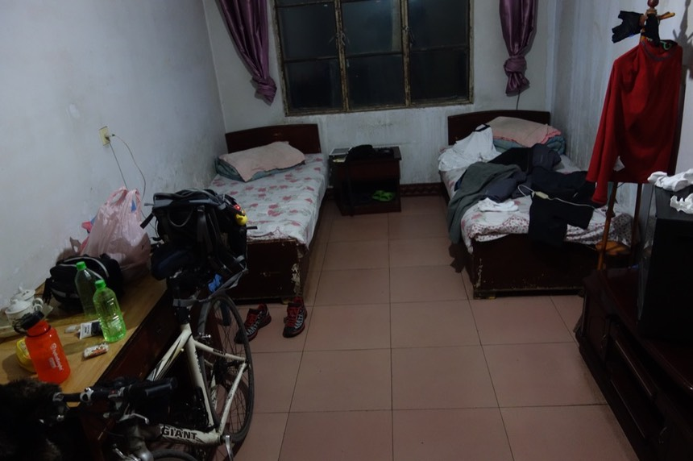
今天騎了超過10小時，非常疲憊，屁股很痛（喔喔喔！終於來了！）
很睏，希望睡醒能恢復活力，睏到可以忘記晚餐還沒吃就上床睡覺，鬆懈下夜騎緊繃的情緒，整個人就像泄氣的小鴨一樣，癱在床上。
房間的床有鋪電熱毯，好棒～
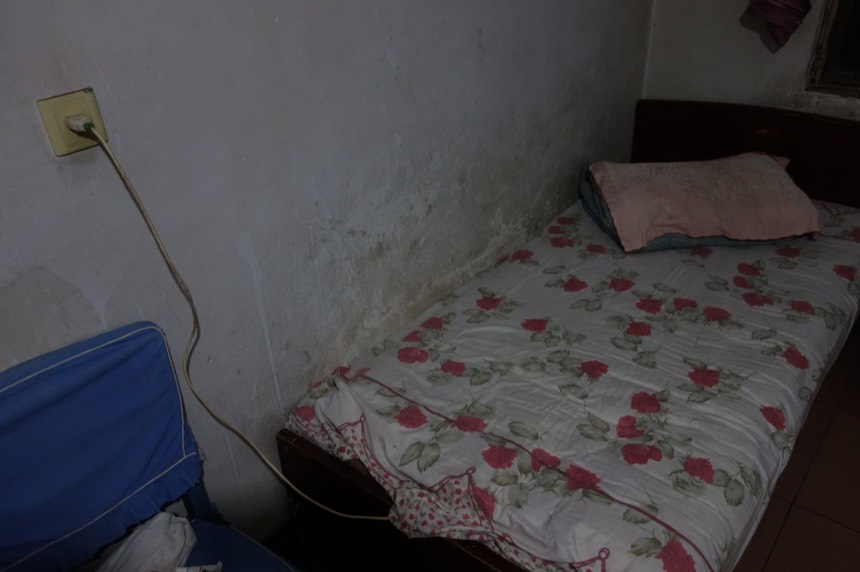
看起來也許覺得爛爛的，但它真的會熱！後來住宿到沒有電熱毯的旅館時，都會很懷念這樣的東西。
日夜溫差極大
白天看似很熱，一入夜後溫度快速降至冰點，若沒有露營的裝備。
僅因為找不到過夜處就隨地歇息（空屋、加油站等），絕對會在晚上被凍的很慘，無論如何都應該確保過夜處。
幸好有堅持騎了一個小時的夜路直到樂都為止，也幸好這一段路沒有出什麼意外。
今日花費
4 早餐 里肌夾餅
8 午餐 炒麵條 大
30 大眾旅店 雙人房獨享
-----
42
今日騎乘
騎乘時間 10：24：34
距離 171.1km
平均速度 16.5km
路線圖（Google Map 連結）